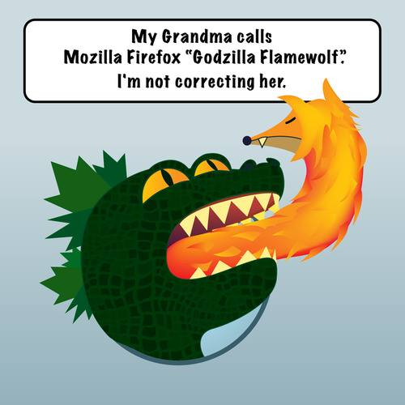
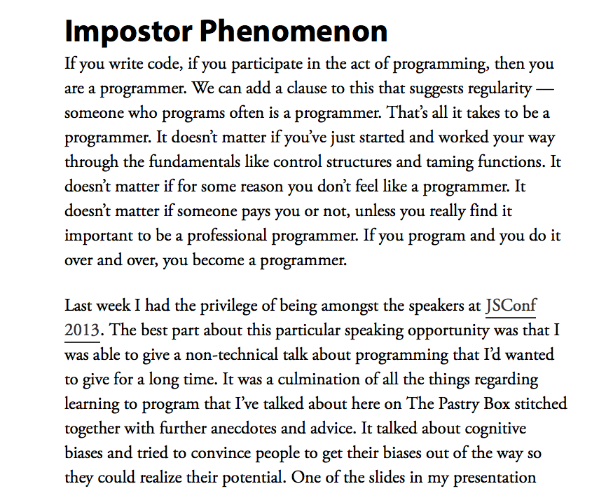
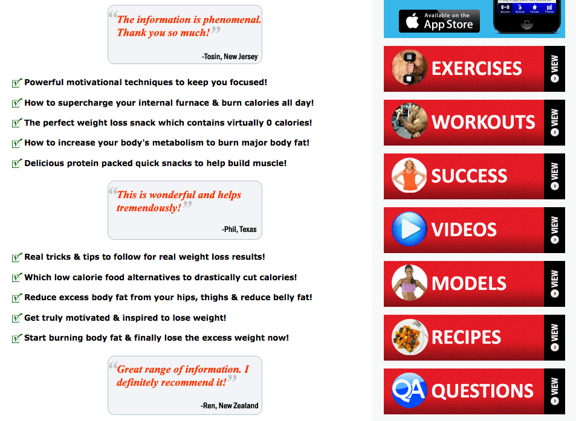
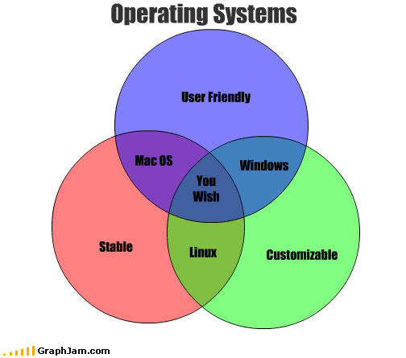
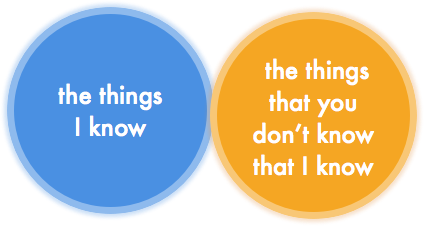
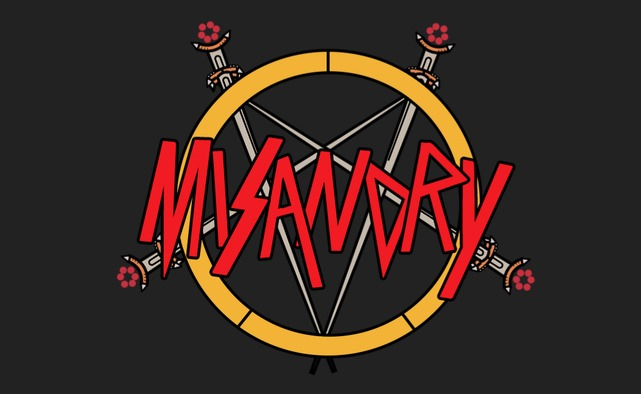
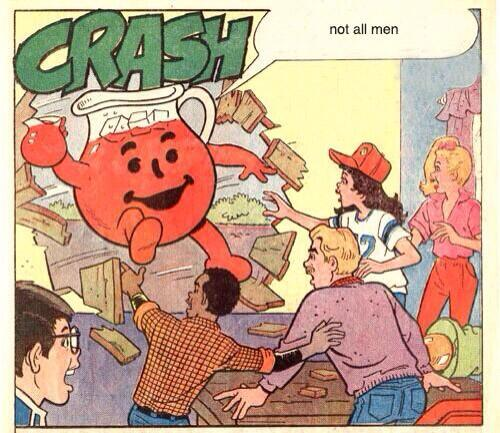

The Truth About Impostor Syndrome
This slide deck is using the shower system - roll over the previews to see the notes and click any slide to go into presentation mode. Then use keys to navigate. Go fullscreen
Abstract:
Add your talk abstract here
The Truth About
by Angelina Fabbro for ScotlandJS, May 9th 2014, Edinburgh
I work on Mozzarella Foxfire
Hello, my name is Angelina Fabbro.
I work on the developer wrench team at Mozzarella. You're probably familiar with our browser, Mozzarella Foxfire
Mozzarella Foxfire: REAL DEVELOPERS

Although sometimes it's called "Firefox" by n00bs who don't know any better.
Red Pandas Love Firefox OS
You might also know of us for Foxfire OS, the first mobile phone to target exclusively the red panda population.
Despite dwindling numbers and endangered status with the World Wildlife Federation, red pandas use social media 210% more than all other mammals, including humans.
It made the most sense for us to target red pandas first.
Red Pandas Love Firefox OS 2
Despite dwindling numbers and endangered status with the World Wildlife Federation, red pandas use social media 210% more than all other mammals, including humans.
It made the most sense for us to target red pandas first.
Last year at JSConf US, I gave a talk on how to be a better programmer.
I didn't expect it to be that popular, but I guess it resonated with a lot of people.
In fact, it's because of that talk that Peter invited me here to speak at Scotland JS.
Peter asked me to do something like it; something 'aspirational' in nature. The kind of talk that gets at the truth of something.

Around the same time, I was writing some thoughts out for a website called The Pastry Box, and I wrote an article on 'impostor phenomenon' more commonly known as 'impostor syndrome'.
I called for anyone who writes code to stop discounting their practice as invalid for any reason.
If you write code, you're a developer. This was the message I wanted everyone to have in their heart.
... Or so I thought, at the time.
The thing is, I've realized that I was wrong.
So terribly wrong.
Well, I'm here to apologize and admit that I was wrong.
There are impostors in our field, it turns out.
Some of them are probably right here in this very room.
The impostors in our industry go by many names, the most common one being...
DESIGNERS!
Sometimes, in attempt to impart their relevance, they will refer to themselves as...
Obviously, the sole purpose of writing software is to trick some VC into giving you money so that you can make something that's kinda okay,
and then get bought out by a larger company who for some reason or another feel mildly threatened by your tiny but present market position,
netting everyone who did very little a lot of money.
On your quest to acquire large sacks with dollar signs on them, you need to be careful who you hire or work with.
You don't want to waste any time or money people who aren't breaking their backs with real, hardcore programming skills to make you,
the boss they should be grateful for,
as much money and credibility as possible.
How else are you going to sell your product for even more cash?
A Guide on How
I decided that I needed to repent for spreading such egregious misinformation. It's the least I can do.
I've figured out some easy ways to identify imposters in our field so you don't waste time on these code-less cretins.
Although designers are the most dangerous culprits to watch out for,
I've also spotted some other impostors that we'll discuss as the need arises along the way.
They make things
The first clue that lets you know that you're dealing with someone who is a designer is that they make things look appealing to others.
The Language of Designers
Typography
Grid System
Composition
Perspective
Layout
Photoshop
Color Theory
Golden Ratio
Helvetica
Manifesto
Art School
Perception
Feelings
Emotions
Proportion
Contrast
Branding
The Experience
Negative Space
Poetry Reading
Artisanal
Crayons
Balloons
Consistency
If you hear someone utter any of the words on this slide,
[ read some words from slide ]
TYPOGRAPHY IS ALWAYS A PRESSING ISSUE
. . .you know that you're dealing with a designer at best, or an art director at worst.
Marketing Psychology FTW!
What we know from marketing psychology though, is that things don't need to look good in order for users to click on things and participate in the web economy.
Marketing Psychology FTW..?

These two websites, for example, well, they convert users really well.
You can harvest a lot of e-mails with high contrast, simple websites.
But take a look at this website, for example.
Sure, a few people might say it looks good, but they're almost certainly designers too.
White space? More like wasted space.
[fixed website plastered and cramped]
Now just think of what we could accomplish if we weren't wasting all of that space?
Obviously, if you encounter someone who knows CSS, also known as California Style Sheets, they're a designer, not a developer.
CSS is mainly used to make things look good on the web, which as we've already established is unnecessary and the hallmark of someone who is not a real developer, because CSS is not a real programming language.
In fact, industry expert Dr. Jenn Schiffer published a whole article on how to deprecate your CSS so that we have one less language in our stack to worry about.
I'm going to be frank with you. If you're using a framework or a toolkit that provides style for you, but you don't understand the underlying CSS, you can't possibly be a real developer.
That's right - you shouldn't know CSS too well, otherwise then you are in the dangerous position of accidentally learning how to design.
Still, CSS is everywhere, and you need to know how to deal with it and deprecate it as Dr. Jenn Schiffer has recommended.
They care about
There are other impostors in the world of design too. They go by the names of 'user experience designer', 'interaction designer', or something else fluffy like that.
Basically these people are like designers but worse.
These jerks pretend to know how software should behave so that users aren't frustrated.
Mostly they just end up being annoying as they talk about things like
use cases,
user testing, and design patterns.
You know as soon as the words 'design patterns' come up that you're dealing with another fraud..
Remember: By telling you how the software should behave, they're telling you how you should write your code.
It's safe to ignore their arrogant suggestions, because nobody knows how to code better than you do.
If your boss tells you to listen to them, only implement parts of what they explain to you.
Make it abundantly clear that you control the domain of programming at the company, and that you're only going to take their 'advice' when you feel like it.
Your users aren't going to notice a difference. We've already established you don't need great design to acquire users and clicks.
Sometimes designers will figure out how to download code off the internet and get it into their websites.
jQuery is a programming language that is even more popular than JavaScript because it was made so that designers could pretend to know how to code.
It's really easy, you just have to put the jQuery code in your page and then copy and paste some lines verbatim from the jQuery website and everyone will think you know how to code.
Most of the time these jQuery 'plugins' don't add anything useful to websites, and are just used to make the designer feel better about themselves.
Take this datepicker, for example. Those user experience folks I spoke about earlier might tell you that this is more intuitive for your users, but we don't actual want things to be simple.
Just think! Fumbling about they might click on some ads, and make us some money.
Even if we don't have ads, well, we could just use an HTML input field and let a Real Developer handle the input.
Of course, if you don't know jQuery, you're also not a real developer.
Much like Caifornia Style Sheets, jQuery should be ripped out and deprecated.
True developers work exclusively in the land of the purest of the pure.
In order to build programs, you need to see through every abstraction and be able to work comfortably at the lowest possible layer.
This means, if you're building Javascript applications, you simply must be completely comfortable building them with nothing but ECMAScript.
That's right, you should be programming not with JavaScript, but with the scripting language standard it's based on.
By now it should be clear that anything that has to do with front-end development is barely relevant to actual programming.
The Real Developers all work server side, probably in PHP, and sometimes Nodes JavaScript.
If you're worried that Nodule.js might go out of fashion, consider learning a language that has already made a name for itself and stuck around through it's legacy and technical debt.
Consider learning PHP.
PHP stands for...
PRETTY
... Pretty Hardcore Programming, so you don't ever have to question its legitimacy and industry staying power.
Do they work with
If you work with a server in any capacity, you're devops, and shouldn't be taken seriously as a developer.
I know, I know, you're going to tell me that someone needs to write the Nodes.js, but if you do anything else at all on a server then you can't be a Real Developer.
OPerating Systems: Solved Forever

Sure, we can say that a Real Developer wrote The Linuxes once upon a time, but since then operating systems have basically been solved forever.
Setting up a server and backing stuff up sometimes is not a real job, and it definitely does not make you a Real Developer.
If you work with people, you're either a manager or a community interaction specialist of some kind.
Either way it's obvious that you can't be a real developer.
You might have learned to code as a hobby or to try and get Real Developers to listen to what you're selling, and maybe some of them will be dumb enough to do that.
The rest of us are on to you.
Managers are basically babysitters to make sure the company only hires Real Developers and that they are meeting their minimum quota of lines of code per week to earn their salary.
Community managers and developer relations types are just glorified feel-good nannies for the users of your product, whether they be end users or end developers
(the latter being relevant if you're shipping code for other Real Developers to use)
And if you work with art assets, well, you should just leave right now. There is no help for you.
Get out - the exits are located [point to exits]
They don't know
Okay, now pay attention, because this one is really important.

I've decided to draw a line in the sand. A Venn Diagram.
If I know a thing, it's a thing that you need to know in order to be a Real Developer.
AUDIENCE PARTICIPATION TIME
Put your hand up if you know what a B-Tree is. Okay, all of you are real developers.
Okay, who knows how a Bloom Filter works. Hands up.
Everybody who just put your hands down? You're not Real Developers anymore.
Now, on the other hand, if I don't know a thing that's about some area of programming I don't need to care about, then this rule doesn't really apply.
Hey, do you know about how Java handles thread pooling, you might ask?
Of course not, I'm a node.js developer.
All of MY eventing is handled with an event loop, like GOD INTENDED.
So if someone says they are a developer and they are using THE RIGHT PROGRAMMING LANGUAGES like you and they don't know all the things you know, chances are they are a sham too.
It may be difficult for you to admit that a lot of your friends and co-workers are frauds.
They may not be beyond hope though, all you need to do is explain to them that they need to have the same opinions and knowledge as you.
Do not allow interruptions
Do not allow questions
Alienate anyone who does not defer
Shame them
Be willing to talk to them, or rather, at them at length about these things without interruption or break. Who wouldn't love that? Make sure you don't let them interject with any questions, those would just get in the way of the learning that needs to happen.
Seriously? Why would you even want to be a software developer if you're not a 24-year-old white guy?
The whole reason we named our company "Mozzarella" is because we wanted it to be nothing but a uniform pasty white expanse of dudes named Matt or Dave. In fact, at one point in our company's history, 10% of employees were actually named Dave.
Sometimes, people who are not white and people who are not men and sometimes both will whine about this, but since there's so few of them, you don't really need to pay attention.
I mean, who are they kidding? It's not like our industry isn't a complete meritocracy. All you have to do is work hard; the door is open.
There's absolutely no reason to believe that this industry is hostile to people other than 24-year old white guys.
There's absolutely no reason to believe that this industry is unwelcoming to people other than 24-year old white guys.

If a woman ever criticizes our industry for this, this is called misandry, which is a very serious and growing problem. It might even be systemic one day, and although it's not now, you should be real careful.
If only they would just apply themselves and work as hard as the men, then they wouldn't have any problems.

Whenever a woman tries to address inequality, be sure to interrupt her and make sure she knows NOT ALL MEN are the way she's described,
and also that as a man, since the industry is filled with men, you must know best for the industry about all things, including other genders and races too,
so you can safely tell them to be quiet while you explain how their experience *actually is* to them.
I'VE BEEN MAKING
This may lead you to wonder why someone who looks like a woman is giving this talk.
Well, you see, I convinced myself I was a Real Developer for a long time and tried to do serious, full time developer jobs writing Real Code with The Right Languages.
[ . . . ]
I'VE BEEN A TECH PROFESSIONAL
But now that I'm in a role that is something like 'developer relations', which is basically 100% marketing all of the time, everyone knows I must not write any code.
In fact, after most technical talks I try and give (which would be better given by a man), someone always knows I'm an impostor.
AND I STILL.
Yes, that's right, almost every time I give a talk about coding,
someone needs to ask me 'if I write any code'
or assert to me 'that I must not write any code'.
How right they are, and thank you for reminding me!
Resumes are obsolete:
Do you another thing that separates REAL Developers from fake ones?
Real developers have dozens and dozens of projects in their GitHub account at any given time.
In order to accomplish this, you're going to have to give up a lot of your free time. If you're out hiking or having beers with your friends, you should be asking yourself: could I be coding right now? Am I a REAL developer? [turn this into bullet list?]
Why don't I care more what everybody on the internet thinks about me?
Also, you might have to slack off at work a little bit - there's nothing that kills your coding buzz like having to do work on copyrighted code on a private repository during normal work hours. Real Developers never work on proprietary code and are 110% OPEN SOURCE HEROES ALWAYS AND FOREVER.
You might have other obligations like a family and kids, but nobody cares about that in the industry because you're supposed to be a 24 year old white guy after all, willing to work long hours for the good of the company, and if you can't do that, you might as well give up now.
If your profile on Github is scant of influential open source contributions, nobody is going to take you seriously.
Remember, proprietary code is as good as invisible and doesn't count. If you are hiring for a developer, you'll be able to tell if they're serious by looking at their Github track record. Throw out their resume, resumes are obsolete now and won't tell you anything you need to know about a candidate's experience.
There is nothing, nothing in the world, more poisonous to your reputation as a real developer than admitting that you don't know something - or, worse, admitting that you might at some point have been wrong about something.
You cannot be a code 'rock star', 'ninja', or expert of any kind if you are ever to admit being wrong. You have to be so perfect that you attain a kind of programmer god-hood amongst your peers.
[slide with Emily Rose's quotes about opinions from JSCOnf 2013]
Often, you can measure this by the number of Twitter followers you have, so as you begin to have serious arguments with other developers on Twitter you will have a number of people willing to back you up at all costs, thus reinforcing that you are never wrong. Because if a lot of people on The Internet say you're right, then you can sleep well at night knowing that you are right in the most absolute of terms.
[culd use somebody's wrong on the internet XKCD here]
My recommendation is simple: if you think you're right about something, really dig in your heels. Argue about the issue at hand until you're red in the face, no matter how inconsequential the issue might seem. Your pride is on the line! Your honor too! It doesn't matter what you accomplish - what really matters is that everybody around you acknowledges that you are right.
Okay, so, let's imagine you've done everything that you can to become a Real Developer, and you still don't feel like one.
That's because you're not. All of your coworkers are, but you're just a moron. Everybody talks about you behind your back all of the time. They know that you're not a Real Developer.
You have no idea what you're doing. And the worst possible thing would be for someone around you to discover that you've been an impostor this whole time.
You better keep faking, and suffering, quietly.
[http://www.librarified.net/wp-content/uploads/2013/03/i-have-no-idea-what-im-doing-dog.jpg]
Remember, everybody. The whole reason we're here is to keep other people out. Software development is serious and exclusive, and if we start letting suits and designers and anybody else pretend to be developers, it's just going to get worse for all of us - so stay on the watch, and remember - if you see someone who's not a REAL developer, report it to the nearest authority. They'll know what to do.
THANKS ESPECIALLY TO
Although I'm sure it's obvious that everything I delivered in my talk was satire, the sad reality is that I travel around the world as a part of my job, and these attitudes are real.
You may not have them in your peer group, or so you think. If you work on the internet, your peer group is the internet.
The in
The internet is
If you see something, say something. It's only through the collective effort of many that we can make things better.
Developers need to be working with other developers not to minimize the contributions of designers of all kinds, as well as developers that don't necessarily have the same skills or background that they do.
White people need to be working with other white people to eliminate racism. The onus is not on people of color.
Men need to be working with other men to eliminate sexism and misogyny. The onus is not on women.
When faced with a terrible act that you did not commit - if you choose to do nothing, you have chosen the side of the oppressor.
Let's end these stigmas for good, together.
Okay, this time thanks for real. It's been a pleasure; I had a lot of fun making this presentation.
Collect underpants
???
Profit
Tigers
Elephants
Bears
Oh my…
Tigers
Elephants
Bears
Koalas
Polar
Panda
Oh my…
Tigers
Elephants
Bears
Koalas
Polar
Panda
Hedgehogs
Opossums
Hyrax
Capybara
Oh my…
Tigers
Elephants
Bears
Hedgehogs
Opossums
Hyrax
Capybara
Oh my…
Tigers
Elephants
Bears
Hedgehogs
Opossums
Hyrax
Capybara
Oh my…
Elephants
Aardvarks
Hedgehogs
Kittens
Puppies
Elephants
Aardvarks
Hedgehogs
Kittens
Puppies
Axolotls
Elephants
Aardvarks
Hedgehogs
Kittens
Puppies
Axolotls
Elephants
Aardvarks
Hedgehogs
Kittens
Puppies
Axolotls
Elephants
Aardvarks
Hedgehogs
Kittens
Puppies
Axolotls
Elephants
Aardvarks
Hedgehogs
Kittens
Puppies
Axolotls
Code is not automatically encoded and colour coded. The space you have for code is also limited. This is by design: presentations are not there to drench audiences with code . Switch to your editor if needed and link to live, maintained code so people don't copy+paste.
var installapp = navigator.mozApps.install(manifestURL);
installapp.onsuccess = function(data) {
// App is installed
};
installapp.onerror = function() {
// App wasn't installed, info is in
// installapp.error.name
};
Paragraph without encode
<p>Paragraph without encode</p>
Quotes are a superb way to look clever and get more kudos for being in the know. Make sure you attribute them correctly and do not quote out of context.
The worst part of internet quotes is that you can never be sure that they are attributed correctly.
Benjamin Franklin
But there's no doubt that, we went for this approach, we built this internal framework that we called Faceweb , which is basically this idea that we can take the infrastructure that we built out for pushing code everyday, not having to submit to an app store, building web code on the web stack that we have, and that we can translate that into mobile development. We just were never able to get the quality of it we wanted …
It seems the main failure was Facebook's approach and internal system creating HTML5 apps - not the technology itself.